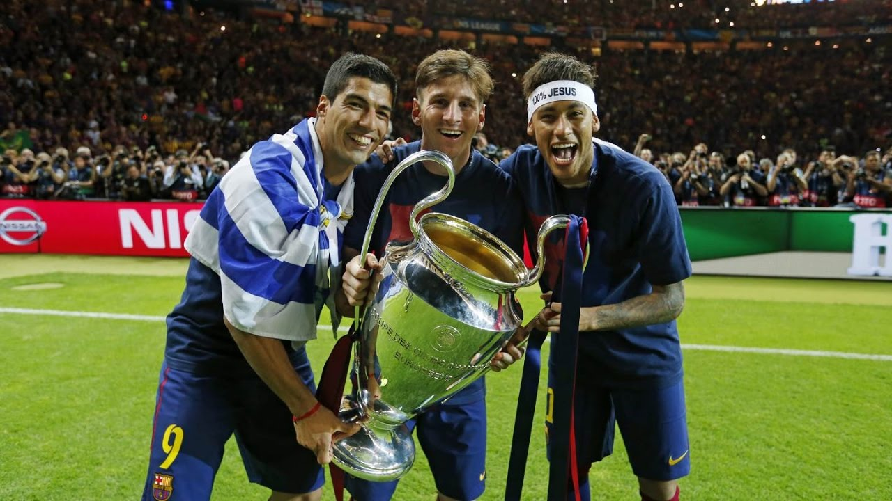
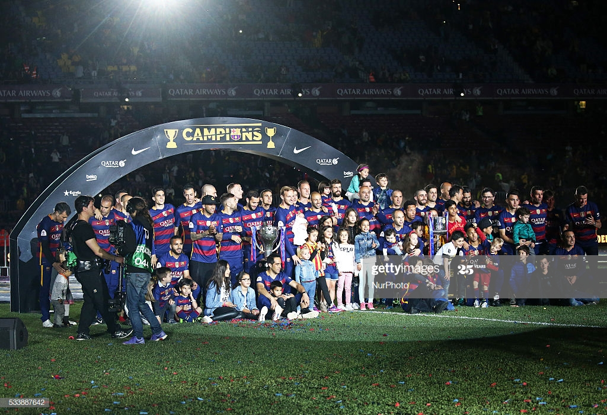
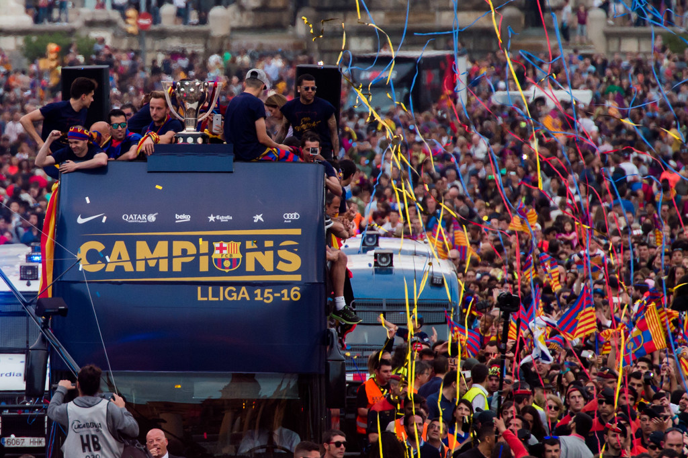
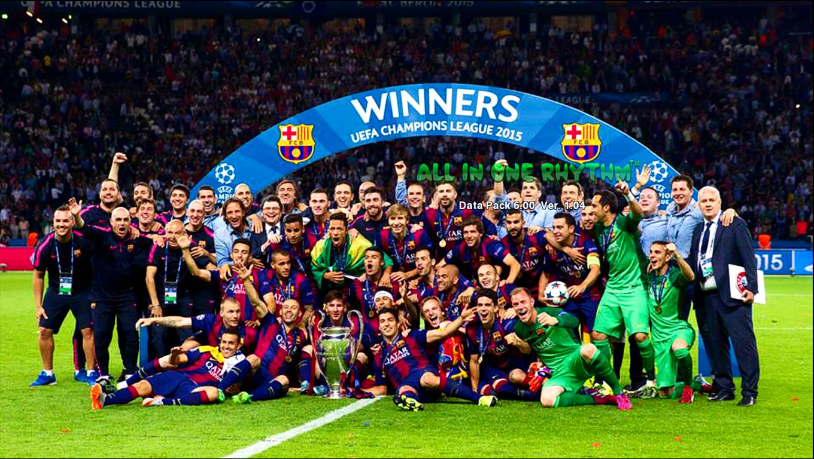

Liga Campionilor UEFA (UCL) (numită Cupa Campionilor Europeni până în 1992) este o competiție fotbalistică europeană anuală inter-cluburi dedicată celor mai victorioase echipe din Europa. Ea reprezintă una dintre cele mai prestigioase trofee de cluburi în sport, alături de Copa Libertadores a Americii de Sud. Liga Campionilor nu trebuie confundată cu Europa League, al doilea cel mai important campionat pentru echipe de cluburi europene. Clubul FC Barcelona a cucerit acest titlu de 5 ori in istoria sa, in sezoanele 1991-92, 2005-06, 2008-09, 2010-11, 2014-15.
Campionatul Mondial al Cluburilor (în engleză FIFA Club World Cup) este o competiție globală de fotbal, înființată în 2000. Este un turneu anual care conferă oficial titlul de campion mondial al cluburilor de fotbal. Acest titlu a fost cucerit de 3 ori de echipa Blaugrana, in 2009-10, 2011-12, 2015-16.
Primera División, cunoscută și ca La Liga, denumită oficial La Liga Santander din motive de sponsorizare, este cea mai importantă competiție profesionistă de fotbal din Spania. Este considerată una dintre cele mai valoroase ligi din lume. FC Barcelona a castigat in istoria sa de 26 de ori acest titlu, in sezoanele 1928-29, 1944-45, 1947-48, 1948-49, 1951-52, 1952-53, 1958-59, 1959-60, 1973-74, 1984-85, 1990-91, 1991-92, 1992-93, 1993-94, 1997-98, 1998-99, 2004-05, 2005-06, 2008-09, 2009-10, 2010-11, 2012-13, 2014-15, 2015-16, 2017-18, 2018-19.
Supercupa Europei este competiție fotbalistică ce constă dintr-un singur meci, organizat anuală de UEFA în luna august și care se desfășoară între deținătoarea Ligii Campionilor și deținătoarea trofeului Europa League, cele mai importante competiții europene inter-cluburi. 'Extraterestrii' au castigat aceasta competitie de 5 ori, in sezoanele 1992-93, 1997-98, 2009-10, 2011-12, 2015-16.
Cupa Regelui (Copa del Rey) este o compețitie anuală între echipele spaniole. Numele ei complet este Cupa Majestății Sale Regele Juan Carlos I (Copa de Su Majestad El Rey Don Juan Carlos I), cu referire la Regele Spaniei, Juan Carlos I al Spaniei. A început să funcționeze ca o competiție din 1902. Barca a castigat aceasta cupa de 30 de ori(1909-10, 1911-12, 1912-13, 1919-20, 1921-22, 1924-25, 1925-26, 1927-28, 1941-42, 1950-51, 1951-52, 1952-53, 1956-57, 1958-59, 1962-63, 1967-68, 1970-71, 1977-78, 1980-81, 1982-83, 1987-88, 1989-90, 1996-97, 1997-98, 2008-09, 2011-12, 2014-15, 2015-16, 2016-17, 2017-18).
Supercopa de España (română:Supercupa Spaniei), este o competiție anuală de fotbal din Spania, în care joacă câștigătoarea campionatului (La Liga) și câștigătoarea cupei (Copa del Rey). E o competiție de o singură fază, jucată în două manșe, tur-retur.
Echipa cu cele mai multe trofee câștigate este FC Barcelona care s-a impus de 13 ori, în 20 ediții în care a participat în această întâlnire. 1983-84, 1991-92, 1992-93, 1994-95, 1996-97, 2005-06, 2006-07, 2009-10, 2010-11, 2011-12, 2013-14, 2016-17, 2018-19.




FC BARCELONA
O adevarata forta a lumii, cu un palmares remarcabil.